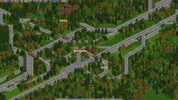
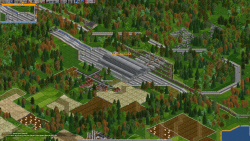

First Shinkansen running on the Sandbox

In my opinion it is looking awesome, even though we have some gfx glitches with diagonal tracks and some other newgrf’s are not compatible with the tracktype of Shinkansen and show the standard MagLev graphics.
To get an impression of the landscape I made this screenshot of SLH2 which fits perfectly in the landscape… great and real eyecandy. Something I recognised though, the new trees (famous as SAC’s Stolentrees) are bigger than the originals and sometimes trains are hidden behinde them completely. If you have problems while building use the very-well-known shortcut “X” to make buildings invisible and activate the patch-option “Invisible Trees” (Interface) to hide them as well.
A lot of other newgrfs are still in development and I hope we can include them in our package somewhen too.


Yes we decided to make a new SBahn-Concept game and as it quite often happens the plan of Mr. XeryusTC won oO. It was great to see a lot of old Nicks in the channel and even on the server: Ammler is back since some days and all of a sudden OwenS is back again too who was already name lost, even at the tt-forums.
It was a quite fun to play with you guys again, I hope we can continue it tomorrow. 🙂

Categories: Public Server